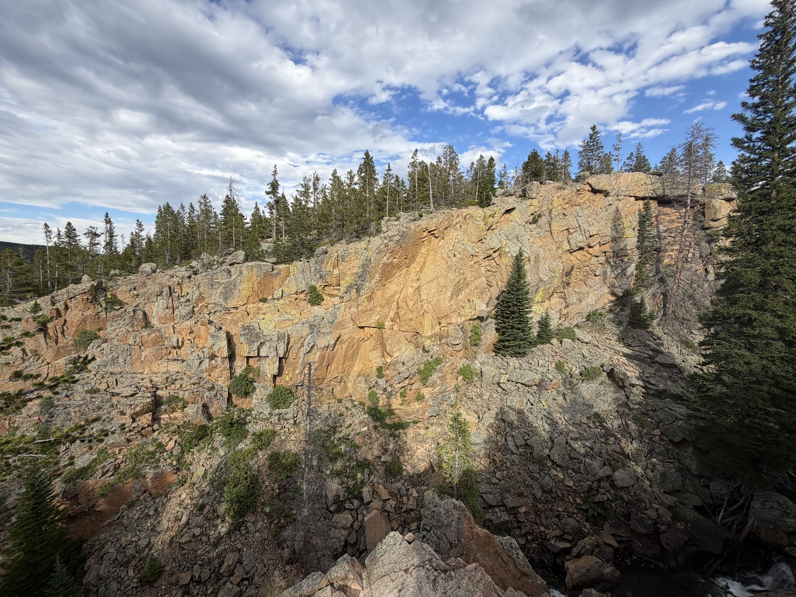

Nature & Photography
I love nature and taking pictures of things I find beautiful. It might be a mountain, a sunset, interesting lighting, water, or something that simply catches my attention.
Photography gives me a reason to slow down and notice details that I might otherwise walk past.